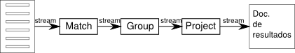

Existen 3 formas:
Los drivers tienen esta funcionalidad, pero lo que se hace es producir un JSON que se envía al motor.
Hay que tener cuidado con memoria, CPU, primarios de replica set y sobre todo mucho cuidado con el sharding
La forma de trabajar es como el “pipe” de los sistemas linux. Pasaremos la salida de un comando a otro y así sucesivamente...
Ejemplo: “nDocs =stream=> fase de match =stream=> group =stream=> project =stream=> documento final”
Para poder realizar operaciones en paralelo hay que usar “Map Reduce”, el resto son secuenciales.
Limitaciones:
El resultado de la operación no es un cursor (no es un array). Es un documento que contiene los resultados.
> db.zips.aggregate([ {$match: {state : "AL" }}])
//Ejemplo encadenando. ``$city`` es el valor del campo
> db.zips.aggregate([ {$match: {state : "AL" }},
{$project: {_id:0, city: {$toUpper: "$city" }}}])
Plantilla para los siguientes documentos (por la agrupación)
Cuidado, ya que se procesa toda la información en memoria
Ejemplo: calcular la población total por estado:
> db.zips.aggregate({$group: {_id: "$state", pop_total: {$sum: "$pop"}}},
{$sort : {pop_total : -1}})
> db.zips.aggregate({$group: {_id: "$state", pop_total: {$sum: "$pop"}}},
{$sort : {pop_total : -1}}, {$limit: 2})
{ "_id" : "CA", "pop_total" : 29760021 }
{ "_id" : "NY", "pop_total" : 17990455 }
Ejemplo: media de población de los estados.
> db.zips.aggregate({$group: {_id: "$state", pop_total: {$sum: "$pop"}}},
{$group: {_id: "total", avg: {$avg: "$pop_total"}}} )
{ "_id" : "total", "avg" : 4876664.176470588 }
Proyecciones encadenadas:
> db.zips.aggregate([ {$group: {_id: {state: "$state", city: "$city"},
pop_total: {$sum: "$pop" }}},
{$group: {_id: "$_id.state", pop_media : {$avg : "$pop_total"}}},
{$sort : {pop_media : -1}}])
Proyecta los campos realizando operaciones si es necesario
Hace una explosión de los elementos de un array a elementos simples.
Si el campo no es un array da un error
Funcionan igual que en las queries normales.
Cuidado con el tema de memoria de nuevo.
Sería siempre la última fase y crearía una nueva colección en la BD.
{$out: "media_x_states"}
En el framework de agregación, si hacemos un match, el uso va a ser el mismo que sin sharding (se hace un match local, se juntan y se devuelven). Con la proyección pasa lo mismo.
El problema son en las agrupaciones que realizan cálculos o se necesitan todos los documentos (group, sort). Que tienen que traer todos los datos al primary shard para realizar todos las operaciones.
Podemos mejorar el rendimiento con el orden de operaciones en los shards, de forma que limitemos los resultados:
-> match, project, group, sort, project...
Si esto se nos queda corto (manejar una gran cantidad de operaciones para agregaciones), habría que plantearse otras soluciones alternativa a Mongo.
La alternativa mas usada es Hadoop (existe connector mongo-hadoop). Y en cantidades mayores: mahout, Hive/Pig, spark/storm, ...
Mongo -> Hadoop -> Mahout, Hive...
Podemos ver un explain en agregación con {explain: true}:
> db.tweets.aggregate([ {$match: {"user.friends_count": {$gt: 0}}},
{$match: {"user.followers_count": {$gt: 0}}},
{$project: { "user.screen_name": 1,
"user.friends_count": 1,
"user.followers_count": 1,
_id: 0,
ratio: {$divide:["$user.followers_count", "$user.friends_count"]}}
},
{$group:{_id: 1, avg: {$avg: "$ratio"}}}
], {explain: true} )
http://docs.mongodb.org/manual/tutorial/map-reduce/
Se usaba inicialmente, cuando no había funciones de agregación
Con map reduce hay que ir haciendo por fases, no hay pipeline:
Fase mapeo: filtro, parseo, limpieza, proyección, split de texto... Esto produce unos valores K,V (clave, valor)
Fase reducción: operaciones de agregación: sumas, medias, ...
map = function() {
emit( this.user.name, { "diggs": this.diggs, "posts" : 1 } ) ;
}
reduce = function(key, values) {
var diggs = 0;
var posts = 0;
values.forEach(function(doc) {
diggs += doc.diggs;
posts += doc.posts;
} ) ;
return { "diggs" : diggs, "posts" : posts } ;
}
db.stories.mapReduce( map, reduce, { "out" : "digg_users" } ) ;
Important